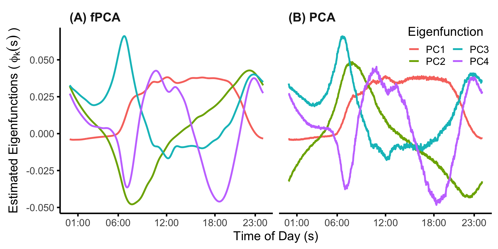
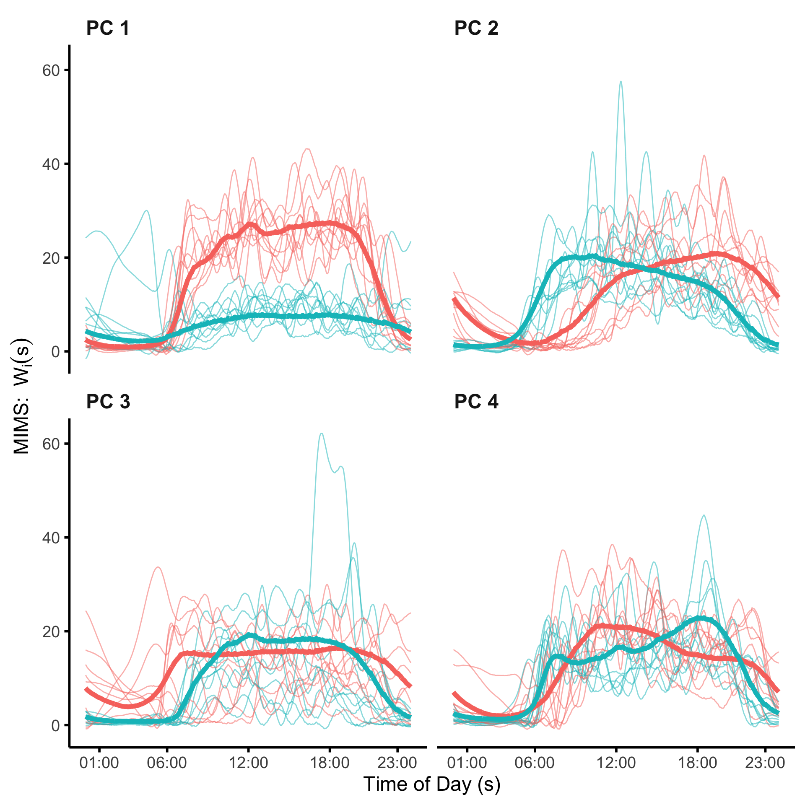
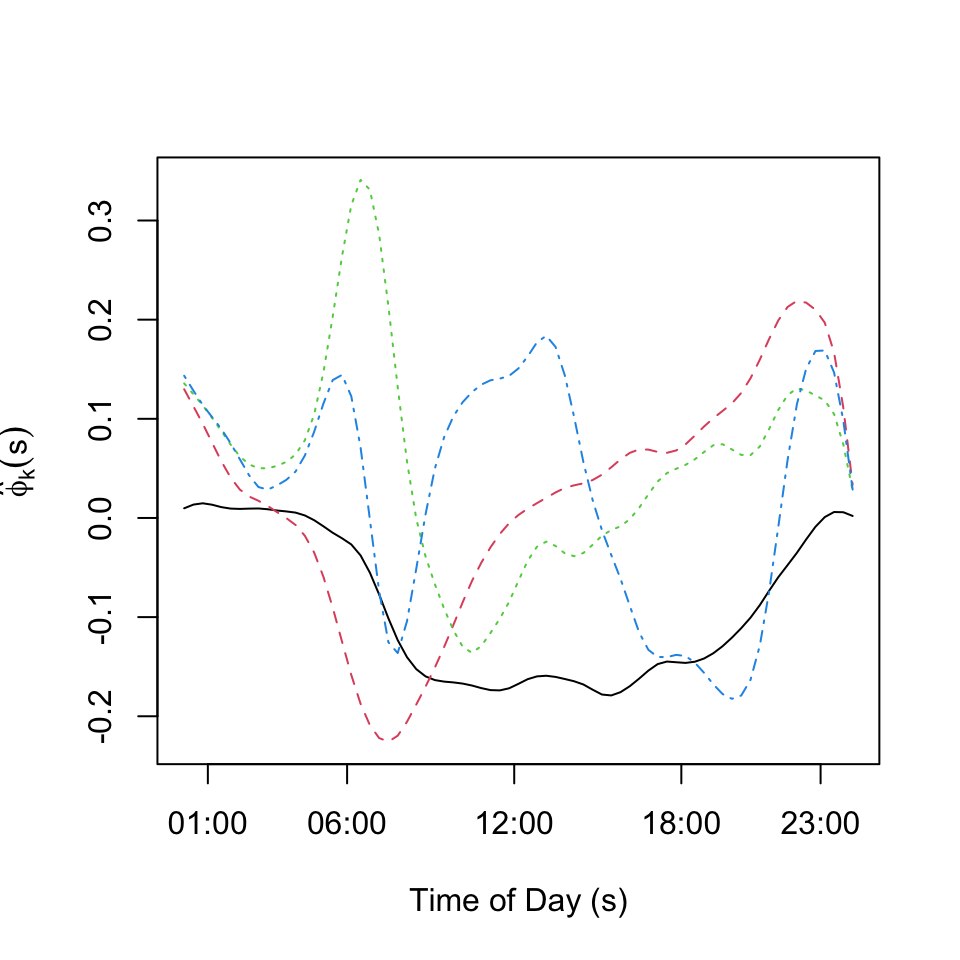
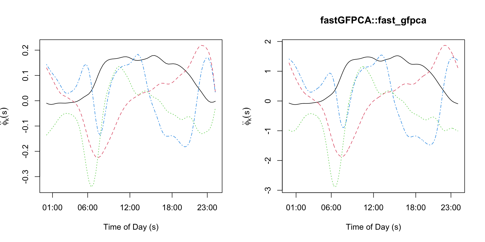

Chapter 3: FPCA
Defining FPCA and Connections to PCA
This section illustrates functional principal component analysis (fPCA) using both simulations. It is associated with Chapter 3 of the book Functional Data Analysis with R. We use dense and dense with missing observations data structures.
Functional PCA is closely related to multivariate PCA, but uses the ordering of the observed data and smoothness of the underlying signal to reduce the rank of the approximation and increase interpretability of results. The idea is to find a small set of orthonormal functions that explain most of the variability of the observed signal.
Simulations
Dense single-level functional data
We start by simulating dense functional data from a set of orthonormal functions. In practice these functions are unknown and would need to be estimated from the data. In simulations the orthonormal functions are known. All functions are generated on an equally spaced grid between \(0\) and \(1\) from the model \[W_i(t)=\sum_{k=1}^K\xi_{ik}\phi_k(t)+\epsilon_{i}(t)\;,\] where \(K=4\), \(\xi_{ik}\sim N(0,\lambda_K)\), \(\epsilon_{i}(t)\sim N(0,\sigma^2)\), \(\xi_{ik}\) and \(\epsilon_i(t)\) are mutually independent for all \(i\), \(k\), and \(t\). For illustration purposes we set \(\lambda_k=0.5^{k-1}\) for \(k=1,\ldots,4\) and \(\sigma=2\), which corresponds to high noise. The number of study participants is set to \(n=50\) and the number grid points is set to \(p=3000\) to illustrate a case of high dimensional data. We start by simulating data that are completely observed for every study participant. We use the Fourier orthonormal functions \(\phi_k(t)\):\[\phi_1(t)=\sqrt{2}\sin(2\pi t); \; \phi_2(t)=\sqrt{2}\cos(2\pi t);\; \phi_3(t)=\sqrt{2}\sin(4\pi t);\; \phi_4(t)=\sqrt{2}\cos(4\pi t)\]
Below we display the R code for simulating the data.
set.seed(5242022)
#### settings (I-->n,J-->p,N-->K)
n <- 50 # number of subjects
p <- 3000 # dimension of the data
t <- (1:p) / p # a regular grid on [0,1]
K <- 4 #number of eigenfunctions
sigma <- 2 ##standard deviation of the random noise
lambdaTrue <- c(1, 0.5, 0.5 ^ 2, 0.5 ^ 3) # True eigenvalues
# True eigenfunctions stored in a p by K dimensional matrix
#Each column corresponds to one eigenfunction
phi <- sqrt(2) * cbind(sin(2 * pi * t), cos(2 * pi * t),
sin(4 * pi * t), cos(4 * pi * t))Note that the functions \(\phi_k(\cdot)\) are orthonormal in \(L_2\). However, we cannot work directly with the functions and, instead, we work with a vector of observations along the functions \(\phi_k=\{\phi_k(t_1),\ldots,\phi_k(t_p)\}\), which is in \({\mathcal{R}^p}\neq L_2\). Even though we have started with orthonormal functions in \(L_2\) these vectors are not orthonormal in \(\mathcal{R}^p\). Indeed, they need to be normalized by \(1/\sqrt{p}\) and the cross products are close to, but not exactly, zero because of numerical approximations. However, after normalization the approximation to orthonormality in \({\mathcal{R}^p}\) is very good
round(t(phi) %*% phi / p, digits = 5)
## [,1] [,2] [,3] [,4]
## [1,] 1 0 0 0
## [2,] 0 1 0 0
## [3,] 0 0 1 0
## [4,] 0 0 0 1To better explain this consider the \(L_2\) norm of any of the functions. It can be shown that \(\int_0^1\phi_k^2(t)dt=1\) for every \(k\), which indicates that the function has norm \(1\) in \(L_2\). The integral can be approximated by the Riemann sum \[1=\int_0^1\phi_k^2(t)dt\approx \sum_{j=1}^p (t_j-t_{j-1})\phi_k^2(t_j)=\frac{1}{p}\sum_{j=1}^p\phi_k^2(t_j)=\frac{1}{p}||\phi_k||^2=\{\phi_k/\sqrt{p}\}^t\{\phi_k/\sqrt{p}\}\;.\] Here \(t_j=j/p\) for \(j=0,\ldots,p\) and \(||\phi_k||^2=\sum_{j=1}^p\phi_k^2(t_j)\) is the \(L_2\) norm of the vector \(\{\phi_k(t_1),\ldots,\phi_k(t_p)\}^t\) in \(\mathcal{R}^p\). This is different, though closely related to, the \(L_2\) norm in the functional space on \([0,1]\). The norm in the vector space is the Riemann sum approximation to the integral of the square of the function. The two have the same interpretation when the observed vectors are divided by \(\sqrt{p}\) (when data are equally spaced and the distance between grid points is \(1/p\)). Slightly different constants are necessary if functional data are on an interval that is not \([0,1]\) or observations have different spacing.
Plots of functions used to generate the data
Below we illustrate the eigenfunctions \(\phi_k(t)\), \(k=1,\ldots,4\) used to generate the data. Lighter colors corresponding to larger \(k\), the index of the function in the basis. The first two eigenfunctions (darker shades of blue) have a period of one (lower frequency) and the second eigenfunctions (lighter shades of blue) have a period of two (higher frequency).
col.me <- c("darkblue", "royalblue", "cadetblue", "deepskyblue")
plot(NULL, xlim = c(0, 1), ylim = c(-1.5, 3.5),
xlab = "Functional domain", ylab = "Functional values",
bty = "n")
for(i in 1:4){
lines(t, phi[,i], lwd = 2.5, col = col.me[i])
}
legend(0.7, 3, legend = c(expression(phi[1](s)), expression(phi[2](s)), expression(phi[3](s)), expression(phi[4](s))),
col = col.me, lty = c(1, 1, 1, 1), lwd = c(3, 3, 3, 3), cex = 1, bty = "n")
Data generation and plotting
Given the data generation mechanism structure it is important to see how data are actually obtained and what types of structures can be generated. This highlights the fact that fPCA provides a data generating mechanism. The general recipe is to simulate the scores independently, multiply them with the eigenfunctions, and add noise.
#Generate independent N(0,1) in an nxK matrix
xi <- matrix(rnorm(n * K), n, K)
#Make scores on column k have variance lambda_k
xi <- xi %*% diag(sqrt(lambdaTrue))
#Obtain the signal by mutliplying the scores with the eigenvectors
X <- xi %*% t(phi); # of size I by J
#Add independent noise
Y <- X + sigma * matrix(rnorm(n * p), n, p)We now visualize the results of the simulations. First we plot the first two functions. As over plotting all functions would make the plot unreadable, in the second plot we use a heatmap. Heatmaps can be misleading, especially when data are noisy and the signal to noise ratio is low.
#Plot the first two functions simulated
par(mar = c(4.5, 4, 0, 1))
plot(t, Y[1,], type = "l",
col = rgb(0, 0, 1, alpha = 0.5), ylim = c(-10, 10),
xlab = "Functional domain", ylab = "Functional values",
bty = "n")
lines(t, Y[2,], col = rgb(1, 0, 0, alpha = 0.5))
library(colorRamps)
library(viridis)
library(RColorBrewer)
colme <- colorRampPalette(brewer.pal(10, "RdYlBu"),bias=1)(100)
#Display the heatmap of all the functions
par(mar = c(4.5, 4, 0.5, 1))
image(t(Y), xlab = "Functional domain (Time)", ylab = "Study participants",
axes = FALSE, col = colme)
mtext(text = 5 * (1:10), side = 2, line = 0.3, at = seq(1 / 10, 1, length = 10), las = 1, cex = 0.8)
mtext(text = seq(1 / 10, 1, length = 10), side = 1, line = 0.3, at = seq(1 / 10, 1, length = 10), las = 1, cex = 0.8)
Obtaining the FPCA results
Given the data generated and displayed we would like to apply standard (raw) and functional (smooth) PCA and compare the results obtained.
First conduct direct PCA analysis on the raw data without smoothing
results_raw <- prcomp(Y)
#Obtain the estimated eigenvalues
raw_eigenvalues <- results_raw$sdev ^ 2 / p
#Obtain the estimated eigenvectors
#Normalize to match with the eigenfunctions
raw_eigenvectors <- sqrt(p) * results_raw$rotation
#Eigenvectors are unique up to sign
#If eigenvectors are negative correlated with the true eigenvectors
#Change their sign
for(k in 1:K){
if(raw_eigenvectors[,k] %*% phi[,k] < 0)
raw_eigenvectors[,k] <- -raw_eigenvectors[,k]
}Now apply the fpca.face smoothing and display the results. The function uses one argument, the \(n\times p\) dimensional matrix of data, where each row corresponds to one study participant and each column corresponds to a location on the domain (e.g., time).
library(refund)
#Here we use more parameters for illustration purposes
results <- fpca.face(Y,center = TRUE, argvals = t, knots = 100, pve = 0.9999, var = TRUE)
#These are re-scaled to appear on the scale of the original functions
Phi <- sqrt(p) * results$efunctions
eigenvalues <- results$evalues / p
#If eigenvectors are negative correlated with the true eigenvectors
#Change their sign
for(k in 1:K){
if(Phi[,k] %*% phi[,k] < 0)
Phi[,k] <- -Phi[,k]
}Plot the true eigenfunctions versus estimated eigenfunctions using raw and smooth PCA. The plot indicates that raw PCA results in highly variable estimates of the true PCA. In contrast smooth PCA provides smooth estimators that are more interpretable and reasonable. Smooth PCA eigenvectors seem to track pretty closely to the mean of the eigenvectors estimated from raw data. Both estimators do not overlap perfectly over the true eigenvectors. This is reasonable to observe in one simulation. However, checking whether the estimators are biased would require multiple simulations and taking the average over these simulations.
par(mar = c(4.5, 4.5, 2, 2))
par(mfrow = c(K / 2, 2))
seq <- (1:(p / 10)) * 10
for(k in 1:K){
plot(t, raw_eigenvectors[,k], type = "l", col = "grey70", lwd = 0.2,
ylim = c(-3, 3), ylab = paste("Eigenfunction ", k, sep = ""), xlab = "Time", bty = "n")
lines(t[seq], phi[seq, k], lwd = 3, col = "blue", lty = 1)
lines(t[seq], Phi[seq, k], lwd = 3, col = "red", lty = 3)
}
Compare the estimated eigenvalues using PCA and FPCA
We next compare the true eigenvalues (blue line) with the estimated eigenvalues using raw PCA (gray dotted line) and using smooth PCA (red dotted line). Notice that the smooth estimated eigenvalues are very close to the true eigenvalues. In contrast, eigenvalues estimated from raw PCA overestimate the true eigenvalues by quite a margin. This is especially true when the true eigenvalues are zero (no signal). Raw PCA continues to assign signal when there is none. Moreover, the estimated eigenvalues using raw PCA decrease slowly to zero forming almost a straight line. This feature can be observed in many applications. If observed, it could suggest that data are noisier than what standard PCA assumes (no noise, just smaller signals as the principal component number increases).
true_eigenvalues <- c(lambdaTrue, rep(0, 46))
results <- fpca.face(Y, center = TRUE, argvals = t, knots = 100, pve = 0.9999, var = TRUE)
smooth_eigenvalues <- rep(0, 50)
ll <- length(results$evalues)
smooth_eigenvalues[1:ll] <- results$evalues / p
par(mar = c(4.5, 4, 0.5, 1))
plot(1:50, true_eigenvalues, lwd = 3, col = "blue", bty = "n", type = "l",
xlab = "Index", ylab = "Eigenvalues")
lines(1:50, raw_eigenvalues, lwd = 3, xlab = "Index", ylab = "Eigenvalues", col = "grey70", lty = 3)
lines(1:50, smooth_eigenvalues, col = "red", lwd = 3, lty = 3)
legend(30, 1, legend = c("True", "Raw", "Smooth"),
col = c("blue", "grey70", "red"), lty = c(1, 3, 3), lwd = c(3, 3, 3), cex = 1, bty = "n")
Show how fpca.face works with NAs
We now show how to use smooth functional PCA even with substantial amount of missing observations. Start by generating a matrix of the same dimension with Y, but containing \(80\)% missing observations
#Missing data percentage
miss_perc <- 0.8
#Randomly assign what data are missing
NA_mat <- matrix(rbinom(p * n, 1, miss_perc), ncol = p)
Y_w_NA <- Y
#Build the matrix with missing observations
Y_w_NA[NA_mat == 1] <- NA
#Conduct fPCA on the matrix with missing data
results_NA <- fpca.face(Y_w_NA, center = TRUE, argvals = t, knots = 100, pve = 0.99)
#Obtain the fPCA estimtors of eigenfunctions
ef_NA <- sqrt(p) * results_NA$efunctions
#If eigenvectors are negative correlated with the true eigenvectors
#Change their sign
for(k in 1:K){
if(ef_NA[,k] %*% phi[,k] < 0)
ef_NA[,k] <- -ef_NA[,k]
}par(mar = c(4.5, 4.5, 2, 2))
par(mfrow = c(K / 2, 2))
seq <- (1:(p / 10)) * 10
for(k in 1:K){
plot(t[seq], phi[seq, k], ylim = c(-3, 3), type = "l", col = "blue",
ylab = paste("Eigenfunction ", k, sep = ""), xlab = "Time", bty = "n", lwd = 2)
lines(t[seq], ef_NA[seq, k], type = "l", col = "red", lty = 3, lwd = 3)
} 
Note that even with \(80\)% missing data, the estimated eigenvectors using fPCA (red dotted line) are very close to the true eigenvectors (blue solid lines). These estimators start to degrade when the missing data becomes extrem and only a few observations are available per function.
Application to NHANES
We begin by by reading in of the subject-level NHANES data (nhanes_fda_with_r.rds). Note that we restrict the sample to participants aged 5 to 80.
## read in the data (assumes data are in the current working directory)
df_subj <- read_rds(here::here("data","nhanes_fda_with_r.rds"))
## filter out participants 80+ and younger than 5
df_subj <-
df_subj %>%
filter(age >= 5, age < 80)Functional Principal Components Analysis
Next, we compare FPCA to PCA on the minute level MIMS profiles (subject average MIMS across days). For FPCA, we apply the FACE method (refund::fpca.face) using the package defaults. For PCA we estimate the principal components using the connection between SVD and eigen decomposition of the empirical covariance matrix.
## Do fPCA on the subject-average MIMS profiles
MIMS_mat <- unclass(df_subj$MIMS)
fpca_MIMS_subj <- fpca.face(MIMS_mat)
## Do PCA on the subject-average MIMS profiles
# subtract column (minute) means to center the "varianbles"
MIMS_mn <- colMeans(MIMS_mat)
MIMS_mat_cn <- sweep(MIMS_mat, MARGIN=2, STATS=MIMS_mn, FUN="-")
# then do SVD
svd_MIMS_subj <- svd(MIMS_mat_cn)We can then plot the first four principal components from each approach.
## plot the results of PCA vs fpca
sind <- seq(0,1,len=1440)
xinx <- (c(1,6,12,18,23)*60+1)/1440
xinx_lab <- c("01:00","06:00","12:00","18:00","23:00")
df_plt <-
data.frame("PC" = rep(paste0("PC",1:4), each=1440),
"time" = rep(sind, 4),
"fPCA" = as.vector(fpca_MIMS_subj$efunctions[,1:4]),
"PCA" = -as.vector(svd_MIMS_subj$v[,1:4]))
df_plt <-
df_plt %>%
pivot_longer(cols=c("fPCA","PCA"))
fpca_vs_pca_NHANES <-
df_plt %>%
mutate(name = factor(name, levels=c("fPCA","PCA"),labels=c("(A) fPCA","(B) PCA"))) %>%
ggplot() +
geom_line(aes(x=time, y=value, color=PC), lwd=1.25) +
facet_grid(~name) +
theme_minimal(base_size=18) +
xlab("Time of Day (s)") +
ylab(expression("Estimated Eigenfunctions (" ~ phi[k](s) ~ ")")) +
scale_x_continuous(breaks=xinx, labels=xinx_lab) +
theme(legend.position=c(.9,.9),
panel.grid.major.y = element_blank(),
panel.grid.major.x = element_blank(),
panel.grid.minor.x = element_blank(),
panel.grid.minor.y = element_blank(),
axis.line.x = element_line(linewidth = 1, linetype = "solid", colour = "black"),
axis.line.y = element_line(linewidth = 1, linetype = "solid", colour = "black"),
strip.text = element_text(face="bold", size=18, hjust=0.03),
axis.ticks.x = element_line(linewidth = 1),
axis.ticks.y = element_line(linewidth = 1)) +
labs(color="Eigenfunction") +
guides(color=guide_legend(ncol=2))
fpca_vs_pca_NHANES
Interpreting the functional PCs may be challenging, particularly for PCs which explain a relatively low proportion of variance. One visualization technique is to plot the distribution of curves which load lowest/highest on a particular PC. Here, we plot the individuals in the bottom and top 10% of scores for the first four PCs. The code below calculates these quantities.
## plot individual curves loading highly/lowly on the first 4 PCs
# set the seed for reproducibility
set.seed(1983)
# number of eigenfunctions to plot
K <- 4
# number of sample curves to plot for each PC
n_plt <- 10
# create container data frame for storing/plotting the individual curves
# for high/low loadings on each of the K PCs
# this data frame will have
# 2 * K * n_plt * 1440 rows
# 2 = high/low
# K = # of PCs
# n_plt = number of individual curves to plot
# 1440 = minutes in a day
df_plt_ind <- expand.grid("sind" = sind,
"id" = 1:n_plt,
"high" = c("high","low"),
"PC" = paste0("PC ",1:4)) %>%
mutate(high = relevel(high, ref="low"))
# create container data frame for storing/plotting the average curves
# for high/ow loadings on each of the first K PCs
# this data frame will have
# 2 * K * 1440 rows
# 2 = high/low
# K = # of PCs
# 1440 = minutes in a day
df_plt_ind_mu <- expand.grid("sind" = sind,
"high" = c("high","low"),
"PC" = paste0("PC ",1:4),
"value" = NA)%>%
mutate(high = relevel(high, ref="low"))
# NOTE: the code below assumes an ordering of rows implied by the construction
# used by the expand.grid function
# create empty vectors to store the average and individual curves, respectively
mu_vec <- c()
ind_vec <- c()
# loop over eigenfunctions
for(k in 1:K){
# get the 10th and 90th percentiles of the scores
q_k <- quantile(fpca_MIMS_subj$scores[,k],c(0.1,0.9))
# get indices associated with low/high scores
inx_low_k <- which(fpca_MIMS_subj$scores[,k] <= q_k[1])
inx_high_k <- which(fpca_MIMS_subj$scores[,k] > q_k[2])
# get the average curves in each quantile: 0-.1, .9-1
mu_low_k <- colMeans(fpca_MIMS_subj$Yhat[inx_low_k,])
mu_high_k <- colMeans(fpca_MIMS_subj$Yhat[inx_high_k,])
# concatenate with existing mean vector
mu_vec <- c(mu_vec, mu_low_k, mu_high_k)
# get individual curves for the n_plt randomly selected participants
val_low_k <- as.vector(t(fpca_MIMS_subj$Yhat[sample(inx_low_k, size=n_plt),]))
val_high_k <- as.vector(t(fpca_MIMS_subj$Yhat[sample(inx_high_k, size=n_plt),]))
# concatenate with existing individual vector
ind_vec <- c(ind_vec, val_low_k, val_high_k)
}
# add the mean and individual vectors into the data frames constructed before the loop
df_plt_ind_mu$value <- mu_vec
df_plt_ind$value <- ind_vecWe can then plot the average and individual curves. We do see the individual curves which load highly on each of the first four PCs do, on average, largely reflect the shapes of the PCs, with this visual effect most strong for the first three PCs.
plt_ind <-
df_plt_ind %>%
mutate(id = factor(id),
id_high = paste0(id,"_",high)) %>%
ggplot() +
geom_line(aes(x=sind, y=value, group=id_high, color=high),alpha=0.5) +
facet_wrap(~PC,ncol=2) +
theme_minimal(base_size=18) +
scale_x_continuous(breaks=xinx, labels=xinx_lab) +
theme(legend.position="none",
panel.grid.major.y = element_blank(),
panel.grid.major.x = element_blank(),
panel.grid.minor.x = element_blank(),
panel.grid.minor.y = element_blank(),
axis.line.x = element_line(size = 1, linetype = "solid", colour = "black"),
axis.line.y = element_line(size = 1, linetype = "solid", colour = "black"),
strip.text = element_text(face="bold", size=18, hjust=0.03),
axis.ticks.x = element_line(size = 1),
axis.ticks.y = element_line(size = 1)) +
xlab("Time of Day (s)") + ylab(expression("MIMS: " ~ W[i](s))) +
geom_line(aes(x=sind, y=value, group=high, color=high),
data=df_plt_ind_mu, lwd=2)
## Warning: The `size` argument of `element_line()` is deprecated as of ggplot2 3.4.0.
## ℹ Please use the `linewidth` argument instead.
## This warning is displayed once every 8 hours.
## Call `lifecycle::last_lifecycle_warnings()` to see where this warning was
## generated.
plt_ind
Generalized Functional Principal Components Analysis (GFPCA)
Functional data come in many forms. For many types of continuous functional data, the Gaussian assumption may not be reasonable. In this case, it may be be possible to apply a set of transformations \(g_s:\mathbb{R}\rightarrow\mathbb{R}\) such that \(g_s\{W_i(s)\}\) is approximately Gaussian for every \(s\in S\). In this case PCA and FPCA can be applied to the transformed data. However are not be always available or desirable. Moreover, when data are not continuous (e.g., binary) transformations do not solve the underlying problem. However, we can still apply the principals of FPCA if we assume a the data are generated from a latent Gaussian process.
Suppose \(W_i(s)\), \(s\in S\) are non-Gaussian observed data. We assume that \(W_i(s_j)\) have a distribution with mean \(E\{W_i(s_j)\}=\mu_i(s_j)\), where \[\begin{equation*} \eta_i(s_j)=h\{\mu_i(s_j)\}=X_i(s_j)=\beta_0(s_j) + \sum_{k=1}^K\xi_{ik}\phi_k(s_j)\;, \end{equation*}\] \(\eta_i(\cdot)\) is the linear predictor, \(h(\cdot)\) is a link function, \(\beta_0(\cdot)\) is a function that varies smoothly along the domain \(S\), \(\phi_k(\cdot)\) are assumed to be orthonormal functions in the \(L_2\) norm, and \(\xi_{ik}\) are mutually uncorrelated random variables. The distribution of \(W_i(s_j)\) could belong to the exponential family or any type of non-Gaussian distribution. The expectation is that the number of orthonormal functions, \(K\), is not too large and the functions \(\phi_k(\cdot)\), \(k=1,\ldots,K\), are unknown and will be estimated from the data. The advantage of this conceptual model is that, once the functions \(\phi_k(\cdot)\) are estimated, the model becomes a generalized linear mixed model (GLMM) with a small number of uncorrelated random effects. This transforms the high-dimensional functional model with non-Gaussian measurements into a low-dimensional GLMM that can be used for estimation and inference.
Application to NHANES
The fast GFPCA method is first shown as presented in the book, as a 4-step procedure estimated manually using mase R functions in combination with mgcv. Afterward, we show how to fit the same GFPCA model using the fastGFPCA package, which wraps this code into a single estimation function.
The GFPCA method decribed in the book is applied to binarized physical activity (active/inactive) profiles. There are many possible ways to define such a profile. For the purposes of this application, we chose to first binarize the day-level data, then take the median across days (rounding up in the event of a tie). To do this we first read in the multi-level (day-level) physical activity data.
df_gfpca_subj_day <- read_rds(here::here("data","nhanes_fda_with_r_ml.rds"))The next step is to binarize the day level data, then take the median across days. Here we use a threshold of 10.558 which was suggested by a recently published paper comparing MIMS to activity counts.
## Y_ij(s)
# extract the day-level activity data
Ymat <- unclass(df_gfpca_subj_day$MIMS)
## Y_ij^B(s)
# binarize the data (this vectorizes the matrix), then put back in matrix format
YBmat <- matrix(as.numeric(Ymat >= 10.558), nrow(Ymat), ncol(Ymat), byrow=FALSE)
## Create X_i(s)
# get unique IDs for all participants and their corresponding row indices
uid <- unique(df_gfpca_subj_day$SEQN)
nid <- length(uid)
inx_rows <- split(1:nrow(YBmat), factor(df_gfpca_subj_day$SEQN, levels=uid))
# calculate X_i(s)
Xmat <- t(vapply(inx_rows, function(x) round(colMeans(YBmat[x,,drop=FALSE])),
numeric(1440)))
rm(Ymat, YBmat)Having created our binarized activity profiles, we then set up a long data matrix which will be used for estimation.
## Put the data in long format
sind <- 1:1440
df_gfpca <- data.frame(SEQN = as.factor(rep(uid, each=1440)),
X = as.vector(t(Xmat)),
sind = sind)To show what these binarized activity profiles look like, we plot profiles for four randomly selected participants.
## plot 4 profiles
set.seed(191)
n_plt <- 4
ids_plt <- sample(uid, size=n_plt, replace=F)
plt_profiles_gfpca <-
df_gfpca %>%
# filter(SEQN %in% paste0("SEQN ", ids_plt)) %>%
filter(SEQN %in% as.character(ids_plt)) %>%
mutate(sind_bin = floor(sind/60)) %>%
group_by(SEQN, sind_bin) %>%
mutate(sind_bin = mean(sind),
X_bin = mean(X)) %>%
ungroup() %>%
ggplot() +
geom_point(aes(x=sind, y=X), alpha=0.25) +
geom_line(aes(x=sind_bin, y=X_bin),linewidth=1.5,color="red") +
facet_wrap(~SEQN, ncol=2) +
theme_minimal(base_size=18) +
scale_x_continuous(breaks=xinx*1440, labels=xinx_lab) +
scale_y_continuous(breaks=c(0,1), labels=c("0 (Inactive)","1 (Active)")) +
theme(legend.position="none",
panel.grid.major.y = element_blank(),
panel.grid.major.x = element_blank(),
panel.grid.minor.x = element_blank(),
panel.grid.minor.y = element_blank(),
axis.line.x = element_line(size = 1, linetype = "solid", colour = "black"),
axis.line.y = element_line(size = 1, linetype = "solid", colour = "black"),
strip.text = element_text(face="bold", size=18, hjust=0.03),
axis.ticks.x = element_line(size = 1),
axis.ticks.y = element_line(size = 1)) +
xlab("Time of Day (s)") + ylab("") Now, although the fast GFPCA methodology described in the book can indeed handle data on the order of the NHANES data, the execution time is still relatively long when compared to the expected compile times for a markdown document. To facilite fast compilation, here we restrict the sample to a subset of \(N=300\) participants. Users interested in obtaining the full results need only comment out the chunk below.
set.seed(5)
N_sub <- 300
uid_sub <- sample(uid, size=N_sub, replace=F)
df_gfpca <- df_gfpca %>% filter(SEQN %in% uid_sub)The fast GFPCA method starts by fixing a value \(s\in S\) and a neighborhood \(N_s\) around \(s\). The following random intercept model is then estimated \[\begin{equation} \eta_i(s_j)=h\{\mu_i(s_j)\}=\beta_0(s)+X_i(s)\;\;{\rm for}\;\;{s_j\in N_s}, \label{eq:ch3_n4} \end{equation}\] where \(\beta_0(s)\) is the fixed intercept and \(X_i(s)\sim N(0,\sigma^2_s)\) are independent random intercepts for \(s\in N_s\) and \(i=1,\ldots,n\), and \(\eta_i(s)=\beta_0(s)+X_i(s)\) is the linear predictor. We refer to the set of neighborhoods as bins, and define each bin by it’s midpoint and the neighborhood. We refer readers to the text for additional details. This choice is non-trivial, and open questions remain regarding how to optimally choose these bins. At a high level, these bins should cover the entire functional domain, and each bin should have enough data so that the local models are estimable (i.e., the data are not all 0 or all 1 in the case of binary data), and not be so wide as to cover regions where the underlying functions are expected to exhibit a high degree of curvature.
This approach will produce estimators of \(X_i(s)\) at every value of \(s\in S\). FPCA can then be applied to smooth these estimators across \(s\). An advantage of this approach is that it can be used with any distribution of \(W_i^*(s_j)\) as long as the single-level mixed effects model can be fit and is readily extended to such scenarios as covariate adjusted models and multilevel/structured functional data (manuscripts in progress).
The code below shows how to partition the 24 hour domain in 20 minute wide bins and fit the local GLMMs. For simplicity of presentation, here we do not take advantage of they cyclical nature of the data by creating bins which cross midnight (see the fastGFPCA function at the end of this section). Note that because we have subset the data (N=300) and there are a high proportion of 0s during the nighttime hours, you will see some convergence warnings. In practice these should be carefully inspected and evaluate whether bins need to be modified (e.g., widened during the nighttime).
Note that to be consistent with the behavior of the fast_gfpca wrapper function, we use fast method for estimation of the local GLMMs (nAGQ=0 argument to the glmer function).
## Step 1: choose bins
# bin width (minutes)
w <- 20
#Add column for bin indicator
df_gfpca_local <-
df_gfpca %>%
mutate(sind_w = floor(sind / w) * w + w / 2)
## Step 2: Fit separate GLMMs for each bin
fit_gfpca_local <-
df_gfpca_local %>%
nest_by(sind_w) %>%
mutate(fit = list(glmer(X ~ 1 + (1|SEQN),
data = data, family = binomial,
nAGQ = 0))) %>%
summarize(y_i = coef(fit)$SEQN[[1]]) %>%
ungroup()
## boundary (singular) fit: see help('isSingular')
## Warning: Returning more (or less) than 1 row per `summarise()` group was deprecated in
## dplyr 1.1.0.
## ℹ Please use `reframe()` instead.
## ℹ When switching from `summarise()` to `reframe()`, remember that `reframe()`
## always returns an ungrouped data frame and adjust accordingly.
## Call `lifecycle::last_lifecycle_warnings()` to see where this warning was
## generated.
## `summarise()` has grouped output by 'sind_w'. You can override using the
## `.groups` argument.Next, for Step 3, we extract the estimated linear predictor for each paritcipant and perform FPCA on those predicted values via the fpca.face function.
#Re-arrange predicted log odds to wide format
etamat <- matrix(fit_gfpca_local$y_i, N_sub, 1440 / w + 1)
#Estimate FPCA
fPCA_local <- fpca.face(etamat, pve = 0.95)If we plot the first four eigenfunctions (see below), we find that the shapes are extremely similar to those presented in the text.
sind_bin <- sort(unique(fit_gfpca_local$sind_w))
matplot(sind_bin, fPCA_local$efunctions[,1:4],type='l', xlab="Time of Day (s)", ylab=expression(hat(phi)[k](s)), xaxt='n')
axis(1, at=c(1,6,12,18,23)*60+1, labels=c("01:00","06:00","12:00","18:00","23:00"))
We then need to evaluate the estimated eigenfunctions on the original grid. The code below shows how to do this using linear interpolation (as presented in the text). These re-evaluated eigenfunctions are added to the data frame used for model fitting to include as random slopes in our final model. Here we choose to use 4 eigenfunctions.
Note that in the fastGFPCA function we evaluate the eigenfunctions exactly using the fact that the eigenfunctions provided by the fpca.face algorithm are a linear combination of B-splines.
K <- 4
#Linear interpolation of eigenfunctions on original grid
sind_bin <- sort(unique(df_gfpca_local$sind_w))
phi_interp <- matrix(NA, 1440, 4)
colnames(phi_interp) <- paste0("phi_", 1:K)
for(k in 1:K) {
phi_local <- fPCA_local$efunctions[,k]
interp_k <- approx(sind_bin, y=phi_local, xout=sind)
phi_interp[,k] <- interp_k$y
}
phi_interp <- data.frame(phi_interp)
phi_interp$sind <- sind
#Add these interpolated eigenfunctions to the long format dataframe
df_gfpca <- left_join(df_gfpca, phi_interp, by = "sind")
uid <- unique(df_gfpca$SEQN)
set.seed(19111)
uid_sub <- c(paste0("SEQN SEQN ", c(ids_plt)), sample(uid, size=300, replace=F))
df_gfpca_sub <-
df_gfpca %>%
filter(SEQN %in% uid_sub) %>%
mutate(SEQN = factor(str_extract(SEQN, "[0-9]+"))) %>%
drop_na()Finally, for Step 4, we re-estimate the model conditional on the estimated eigenfunctions.
#Estimate the GLMM
fit_gfpca <-
bam(X ~ s(sind, bs = "cc", k = 20) +
s(SEQN, by = phi_1, bs = "re") +
s(SEQN, by = phi_2, bs = "re") +
s(SEQN, by = phi_3, bs = "re") +
s(SEQN, by = phi_4, bs = "re"),
method = "fREML", discrete = TRUE, data = df_gfpca,
family=binomial)Alternatively, the method can be estimated using the convenient wrapper function fast_gfpca in the cleverly named fastGFPCA package. Note that the data input for this wrapper function requires a particular naming convention. Specifically, “id” for the participant identifier, “value” for the functional data, and “index” for the functional domain. The fast_gfpca supports cyclic/periodic data using the “periodicity” argument. Below, we estimate fast GFPCA on the NHANES data using non-overlapping bins of 20 minutes and 4 eigenfunctions for the latent Gaussian process.
library(fastGFPCA)
df_gfpca <-
df_gfpca %>%
mutate(id = SEQN, value = X, index = sind)
fit_gfpca_wrap <- fast_gfpca(Y=df_gfpca, overlap = F, binwidth=20, family="binomial",
periodicity = TRUE, npc=4)We can inspect the contents of the returned object. The function returns the final estimates for the linear predictor (Yhat), the estimated subject-specific scores from step 4 (scores), the population mean function (mu), the estiamted eigenfunctions (efunctions), and the estimated eigenvalues from Step 3 (evalues).
str(fit_gfpca_wrap)
## List of 8
## $ Yhat : num [1:300, 1:1440] -5.35 -4.28 -4.73 -4.63 -2.99 ...
## $ scores : num [1:300, 1:4] 1.341 0.489 -0.391 1.1 -0.658 ...
## $ mu : Named num [1:1440] -3.74 -3.76 -3.76 -3.77 -3.78 ...
## ..- attr(*, "names")= chr [1:1440] "1" "2" "3" "4" ...
## $ efunctions: num [1:1440, 1:4] -0.0706 -0.0721 -0.0736 -0.075 -0.0765 ...
## $ evalues : num [1:4] 126.7 59 20.5 12.2
## $ npc : num 4
## $ pve : num NA
## $ family :List of 12
## ..$ family : chr "binomial"
## ..$ link : chr "logit"
## ..$ linkfun :function (mu)
## ..$ linkinv :function (eta)
## ..$ variance :function (mu)
## ..$ dev.resids:function (y, mu, wt)
## ..$ aic :function (y, n, mu, wt, dev)
## ..$ mu.eta :function (eta)
## ..$ initialize: language { if (NCOL(y) == 1) { ...
## ..$ validmu :function (mu)
## ..$ valideta :function (eta)
## ..$ simulate :function (object, nsim)
## ..- attr(*, "class")= chr "family"
## - attr(*, "class")= chr "fpca"Below we plot the estimated eigenfunctions obtained from the fastGFPCA::fast_gfpca function and from our manual coding of the fast GFPCA methodology for comparison. We see the estimates are effectively identical. Note that 1) the sign of the first and fourth eigenfunction was changed for ease of visual comparison (recall that eigenfunctions/scores are unique up to a sign); and 2) the magnitude of the eigenfunctions are not the same. This is because the fpca.face function returns orthonormal vectors (does not account for the scale of the domain). The fastGFPCA::fast_gfpca rescales the vectors internally so that the eigenfunctions are orthonormal.
par(mfrow=c(1,2))
matplot(sind_bin, fPCA_local$efunctions[,1:4]*kronecker(t(c(-1,1,-1,1)), rep(1,nrow(fPCA_local$efunctions))),
type='l', xlab="Time of Day (s)",
main="", ylab=expression(hat(phi)[k](s)), xaxt='n')
axis(1, at=c(1,6,12,18,23)*60+1, labels=c("01:00","06:00","12:00","18:00","23:00"))
matplot(1:1440, fit_gfpca_wrap$efunctions[,1:4],type='l', xlab="Time of Day (s)",
main="fastGFPCA::fast_gfpca",ylab=expression(hat(phi)[k](s)), xaxt='n')
axis(1, at=c(1,6,12,18,23)*60+1, labels=c("01:00","06:00","12:00","18:00","23:00"))
Sparse FPCA of the CONTENT data set
Load the packages that will be used. Here the function
face::face.sparse is doing the heavy lifting. The package
tidyverse is used for reading the data and some data
manipulation, the package fields is used for its
image.plot function, while refund contains the
CONTENT data set.
library(tidyverse)
library(refund)
library(face)
library(fields)Obtain and describe the data
Data are available in the refund package
data("content")
content_df <- content
head(content_df)
## id ma1fe0 weightkg height agedays cbmi zlen zwei zwfl zbmi
## 1 1 0 5.618 56.0 61 17.91454 -0.53 0.70 1.64 1.37
## 2 1 0 5.990 56.2 65 18.96506 -0.62 1.05 2.18 1.93
## 3 1 0 5.974 56.5 71 18.71407 -0.75 0.81 1.99 1.69
## 4 1 0 6.290 57.4 77 19.09092 -0.57 1.01 2.03 1.83
## 5 1 0 6.618 58.6 84 19.27221 -0.28 1.20 1.94 1.85
## 6 1 0 6.530 58.8 91 18.88681 -0.46 0.89 1.70 1.56nobs <- dim(content_df)[1]
id <- content_df$id
t <- content_df$agedays
uid <- unique(id)
nbabies <- length(uid)
av_obs <- round(nobs / nbabies, digits = 0)We now illustrate the sampling locations of the CONTENT data, where each study participant is shown on one line. Each dot in the plot below is a sampling point for a child expressed in days from birth.
par(mar = c(4.5, 4, 0.5, 1))
plot(1, type = "n", xlab = "Days from birth", ylab = "Study participants", xlim = c(0, 700), ylim = c(0, length(uid)), bty = "n")
for(i in 1:length(uid)){
seq <- which(id == uid[i])
points(t[seq], rep(i, length(seq)), col = "red", pch = 19, cex = 0.2)
}
We now display the z-score for length (blue dots) and weight (red dots) for \(4\) study participants. This plot illustrates the dependence between the normalized length and weight measures as a function of time from birth.
y1 <- content_df$zlen
y2 <- content_df$zwei
Sample <- c(30, 45, 56, 67)
par(mfrow = c(2, 2), mar = c(4.5, 4.5, 3, 2))
for(i in 1:4){
sel <- which(id == uid[Sample[i]])
plot(t[sel], y1[sel], col = "blue", pch = 19,
xlab = "Days from birth",
ylab = "z-score", main = paste("Subject ", uid[Sample[i]]), bty = "n",
ylim = c(-4, 4), xlim = c(0, 701), cex = 0.7)
points(t[sel], y2[sel], col = "red", pch = 19, cex = 0.7)
}
Estimation using face.sparse
This component of the document illustrates how to use the
face.sparse function to fit a sparse FPCA model and extract
important summaries of the fit. Data needs to be in long format with y
containing the data, id containing the subject ids, and t containing
time. We build a data frame with these values.
id <- content_df$id
uid <- unique(id)
t <- content_df$agedays
y <- content_df$zlen
#Prepare the data for face.sparse
data <- data.frame(y = y, argvals = t, subj = id)
#Apply face.sparse to the entire data set
fit_face <- face.sparse(data, argvals.new = (1:701))
#Create a data double
data.h <- data
tnew <- fit_face$argvals.newAll results are now stored in the fit_face variable and
we will show how to extract and plot estimators of the mean, covariance,
variance, correlation function, and eigenfunctions.
#Smooth marginal mean
m <- fit_face$mu.new
#Smooth covariance
Cov <- fit_face$Chat.new
#Pointwise covariance
Cov_diag <- diag(Cov)
#Smooth correlation
Cor <- fit_face$Cor.new
#Pointwise prediction intervals
m_p_2sd <- m + 2 * sqrt(Cov_diag)
m_m_2sd <- m - 2 * sqrt(Cov_diag)
#Smooth eigenfunctions
eigenf <- fit_face$eigenfunctions
#Smooth eigenvalues
eigenv <- fit_face$eigenvaluesPlot the mean, variance, marginal prediction interval, and correlation function. Note that the mean function (panel in first row first column) has an increasing trend with a decline between \(200\) and \(400\) days after birth. This is likely to be due to what babies remained in the study after day \(200\). It could be that lighter babies were more likely to stay in the study, but this hypothesis requires more investigation. The standard deviation (panel in first row second column) is very close to \(1\), but smaller than \(1\). This is probably due to the nature of the sampling, which focuses on a particular subgroup of babies. The pointwise prediction interval (panel in second row first column) seems to indicate that the assumption of normality of the marginal distributions at every time point may be reasonable. The correlation plot (panel in second row second column) seems to indicate that correlation is not overly complicated, and indicates that most of the variability in the smooth component may be explained by a few eigenfunctions.
par(mfrow = c(2, 2), mar = c(4.5, 4.5, 1, 2))
#First panel, plot the mean function
plot(tnew, m,
lwd = 2, lty = 2, col = "blue",
xlab = "Days from birth",
ylab = "Mean zlen", bty = "n")
#Second panel, plot the standard deviation
plot(tnew, sqrt(Cov_diag), type = "l", lwd = 3,
col = "red",
xlab = "Days from birth",
ylab = "SD zlen", bty = "n")
#Third panel, plot the mean plus minus 2sd
plot(1, type = "n", xlab = "Days from birth", ylab = "zlen", xlim = c(0, 700),
ylim = c(-3.5, 3), bty = "n")
for(i in 1:length(uid)){
seq <- which(id == uid[i])
lines(t[seq], y[seq], col = rgb(0, 0, 0, alpha = 0.1))
}
#Mean and marginal prediction intervals
lines(tnew, m, lwd = 3, lty = 1, col = "blue")
lines(tnew, m_p_2sd, lwd = 2, lty = 3, col = "red")
lines(tnew, m_m_2sd, lwd = 2, lty = 3, col = "red")
#Fourth panel, correlation function
image.plot(tnew, tnew, Cor,
xlab = "Days from birth",
ylab = "Days from birth",
main = "",
axis.args = list(at = c(0.6, 0.7, 0.8, 0.9, 1.0)),
legend.shrink = 0.8,
legend.line = -1.5, legend.width = 0.5)
The first three eigenvalues of the covariance operator explain more than \(99\)% of the variability of the smooth component. Below we display the eigenfunctions that correspond to these three largest eigenvalues. The first eigenfunction (PC1, shown in blue) is very close to a random intercept, while the second eigenfunction (PC2, shown in green) is very close to a random slope. However, the third eigenfunction (PC3, shown in red) could probably be captured by a quadratic spline with a knot at \(300\) days from birth.
par(mar = c(4.5, 4.5, 0, 2))
col_me <- c("cornflowerblue", "aquamarine3", "coral1")
#Make an empty plot
plot(1, type = "n", xlab = "Days from birth", ylab = "", xlim = c(0, 700),
ylim = c(-3.5, 5), bty = "n")
for(i in 1:3){
lines(0:700, eigenf[,i], col = col_me[i], lwd = 3)
}
legend(500, 4, c("PC1", "PC2", "PC3"),
col = col_me, lty = c(1, 1, 1),
bty = "n", lwd = c(3, 3, 3), cex = 0.8)
Predict trajectories using face.sparse
Predict and plot the z-score for length observations for four study participants. These are the same study participants shown in the data examples earlier.
Sample <- c(30, 45, 56, 67)
#The days where we predict the function
seq <- 1:701
#This is used to prepare the data used for prediction
k <- length(seq)
par(mfrow = c(2, 2), mar = c(4.5, 4.5, 3, 2))
for(i in 1:4){
#Begin for loop over study participants
#Select the data that correspond to individual i in Sample
sel <- which(id == uid[Sample[i]])
dati <- data.h[sel,]
#Create the data frame for prediction
dati_pred <- data.frame(y = rep(NA, nrow(dati) + k),
argvals = c(rep(NA, nrow(dati)), seq),
subj = rep(dati$subj[1], nrow(dati) + k ))
#Fill the first part of the data set with the observations for the subject that will be predicted
dati_pred[1:nrow(dati),] <- dati
#Produce the predictions for subject i
yhat2 <- predict(fit_face, dati_pred)
data3 <- dati
Ylim <- range(c(data3$y, yhat2$y.pred))
Ord <- nrow(dati) + 1:k
plot(data3$argvals, data3$y,
xlab = "Days from birth",
ylab = "zlen", pch = 19, col = "blue",
cex = 0.6, ylim = c(-3, 3),
cex.lab = 1.25, cex.axis = 1.25,
cex.main = 1.25, xlim = c(1, 700),
bty = "n", main = paste("Subject ", uid[Sample[i]]))
lines(dati_pred$argvals[Ord], yhat2$y.pred[Ord], col = "red", lwd = 2)
lines(dati_pred$argvals[Ord], yhat2$y.pred[Ord] - 1.96 * yhat2$se.pred[Ord],
col = "red", lwd = 1, lty = 2)
lines(dati_pred$argvals[Ord], yhat2$y.pred[Ord] + 1.96 * yhat2$se.pred[Ord],
col = "red", lwd = 1, lty = 2)
lines(tnew, fit_face$mu.new, col = "black", lwd = 2)
}#End for loop over study participants
When PCA Fails
PCA for pure noise
We generate data independently from \[W_i(t)\sim N(0,\sigma^2)\] and apply PCA to see what types of results we obtain.
The number of study participants is set to \(n=250\) and the number grid points is set to \(p=3000\) to illustrate a case of high dimensional data.
set.seed(5242022)
n <- 250
p <- 3000
K <- 4
t <- (1:p) / p
sigma <- 2
W <- sigma * matrix(rnorm(n * p), n, p)Apply PCA to the data matrix \(W\)
results_raw <- prcomp(W)
#Obtain the estimated eigenvalues
raw_eigenvalues <- results_raw$sdev ^ 2 / 3000
#Obtain the estimated eigenvectors
#Normalize to match with the eigenfunctions
raw_eigenvectors <- sqrt(p) * results_raw$rotationPlot the eigenvectors and save the figure
par(mar = c(4.5, 4.5, 2, 2))
par(mfrow = c(K / 2, 2))
seq <- (1:(p / 10)) * 10
for(k in 1:K){
plot(t, raw_eigenvectors[,k], type = "l", col = "grey70", lwd = 0.2, ylim = c(-3, 3),
ylab = paste("Eigenfunction ", k, sep = ""),
xlab = "Time", bty = "n")
}
Plot the first 50 eigenvalues from the largest to the smallest
par(mar = c(4.5, 4, 1, 1))
plot(raw_eigenvalues[1:50], bty = "n", type = "l", lwd = 3, ylab = "Eigenvalues", xlab = "Eigenvalues Index")
PCA for randomly placed bumps
We generate data independently data without noise where
\[W_i(t) = \frac{1}{\sqrt{2\pi}\sigma_i}\exp\left\{-\frac{(t-\mu_i)^2}{2\sigma^2_i}\right\}\;,\] where \(\mu_i\sim\textrm{Uniform}[0,1]\) are random centers of the Gaussian distributions. The standard deviations are \(\sigma_i\sim\textrm{Uniform}[0.05,0.15]\), which control the size of the bump.
W <- matrix(rep(NA, p * n), ncol = p)
x <- seq(0, 1, length = 3000)
for(i in 1:n){
mu <- runif(1)
sigma <- 0.01
W[i,] <- dnorm(x, mu, sigma)
}Plot the first 5 functions generated via this procedure
library(viridis)
col.sc <- viridis(10)
plot(1, type = "n", xlab = "Functional domain", ylab = "Functional values",
xlim = c(0, 1), ylim = c(0, 40), bty = "n")
for(i in 1:10){
lines(x, W[i,], type = "l", lwd = 2, col = col.sc[i])
}
lines(c(0, 1), c(0, 0), lwd = 3)
results_raw <- prcomp(W)
raw_eigenvalues <- results_raw$sdev ^ 2 / 3000
#Obtain the estimated eigenvectors
#Normalize to match with the eigenfunctions
raw_eigenvectors <- sqrt(p) * results_raw$rotation
par(mar = c(4.5, 4.5, 2, 2))
par(mfrow = c(K / 2, 2))
seq <- (1:(p / 10)) * 10
for(k in 1:K){
plot(t, raw_eigenvectors[,k], type = "l", lwd = 2, ylim = c(-3, 6),
ylab = paste("Eigenfunction ", k, sep = ""),
xlab = "Time", bty = "n")
}
Plot the first \(50\) largest eigenvalues for the Gaussian bumps data.
par(mar = c(4.5, 4, 1, 1))
plot(raw_eigenvalues[1:50], bty = "n", type = "l", lwd = 3, ylab = "Eigenvalues", xlab = "Eigenvalues Index")
The number of study participants is set to \(n=250\) and the number grid points is set to \(p=3000\) to illustrate a case of high dimensional data.